AI (Ayyub-Isa) Console System
(not artificial intelligence)
🇪🇳🇩-🇺🇸🇪🇷 🇲🇦🇳🇺🇦🇱
Version 0.2.4 (June 4th 2021)
[Home] ·
[English US] ·
[Bahasa Indonesia]
i. Table of Content
A. Help and Information
B. Configuration
C. Cryptographic
D. Registration
E. Packages
F. Tools and Utilities
G. Testing
...
A. Help and Information
Salah perintah yang sudah tersedia dalam system AI adalah
help, untuk mengaksesnya cukup dengan mengetik:
$ ai help
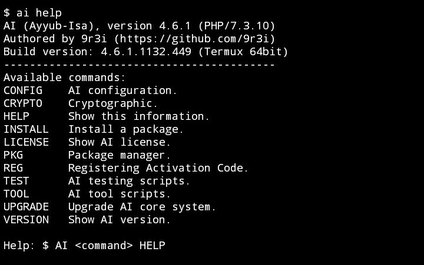
Seperti system lain pada umumnya, perintah
help ini adalah perintah yang sangat penting untuk membantu pengguna dalam menggunakan system tersebut, tanpa ini kita akan sulit menggunakan system yang dipakai.
Dalam perintah
help ini, terdapat informasi tentang perintah lain yang sudah tersedia. Pada system AI secara default sudah terinstal beberapa perintah core, yaitu:
1. config Configuration
2. crypto Cryptographic
3. help -- Information
4. install -- Installation
5. license -- License
6. pkg Package
7. reg Registration
8. test Testing
9. tool Tools and Utilities
10. upgrade -- Core Upgrade
11. version -- Version Information
Beberapa dari perintah diatas adalah extension yang tertanam didalam core system AI, diantaranya: config, crypto, pkg, reg, test dan tool, sisanya adalah core dari system tersebut.
Perintah yang tidak termasuk core extension diantaranya:
1. help, sudah dijelaskan diatas
2. install, untuk install package dari ai.package server
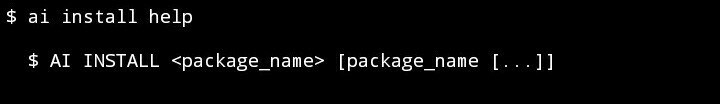
3. license, menampilkan AI private license
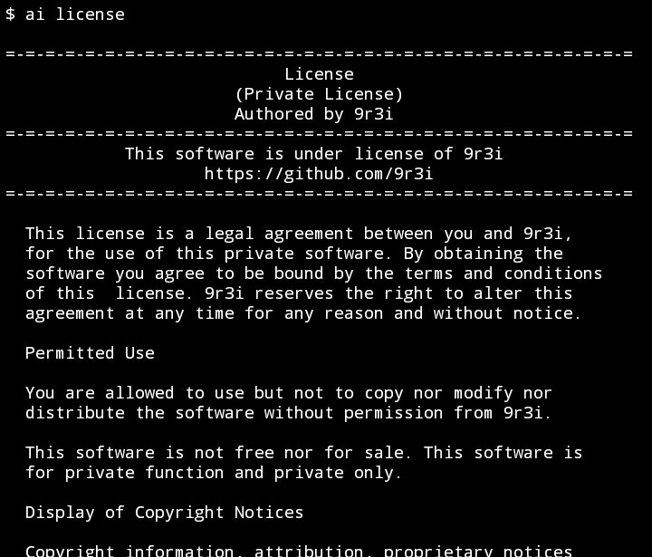
4. upgrade, untuk cek dan upgrade core system
5. version, menampilkan versi dari AI
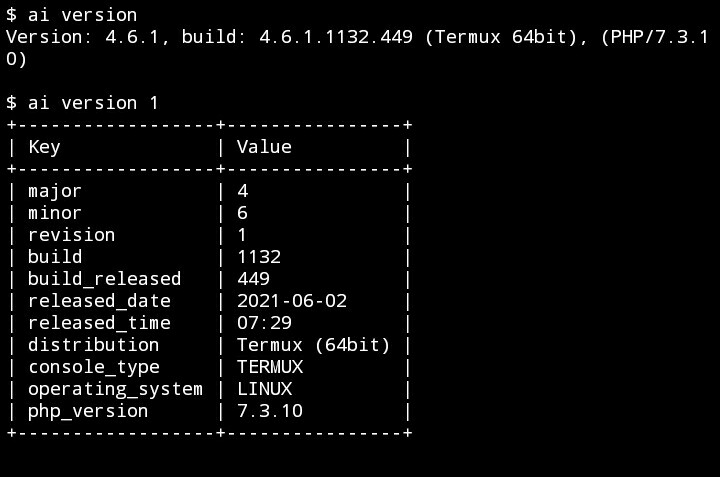
B. Configuration
...
C. Cryptographic
Saya tidak terlalu suka basa-basi, kita akan langsung saja mencoba encrypt sebuah file media ataupun document.
1. Sebelumnya kita cek dulu opsi pada perintah crypto.
$ ai crypto help
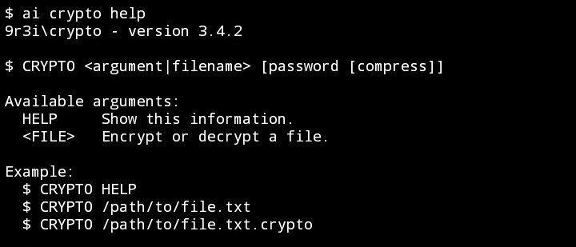
2. Rubah directory dimana file yang ingin dienkrip itu berada.
Bila berada di /sdcard maka ketik:
$ cd /sdcard
Cek lokasi directory dengan
$ pwd
Lalu cek file list didalam directory dengan
$ ls
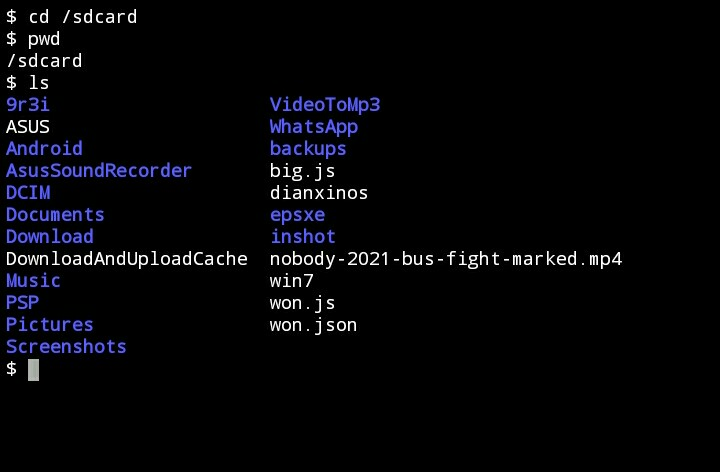
3. Kali ini kita akan enkrip sebuah file bernama:
--> nobody-2021-bus-fight-marked.mp4
Untuk mengenkripnya cukup dengan pola ini:
$ ai crypto <nama_file>
Maka kita akan ketik:
$ ai crypto nobody-2021-bus-fight-marked.mp4
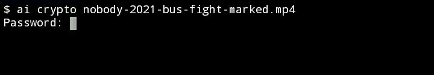
Lalu masukan kata sandi untuk membuka kuncinya nanti.
4. Optional, compress file menjadi file zip.
Ini sangat perlu untuk file document.
Namun file mp4 adalah media, jadi aman tanpa compress.
Ketik n, lalu Enter,
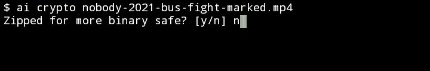
5. Jika sudah, proses enkripsi akan mulai.
Lalu kita menunggu proses enkripisasi tersebut.
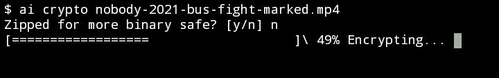
6. Jika selesai dan berhasil, muncul,
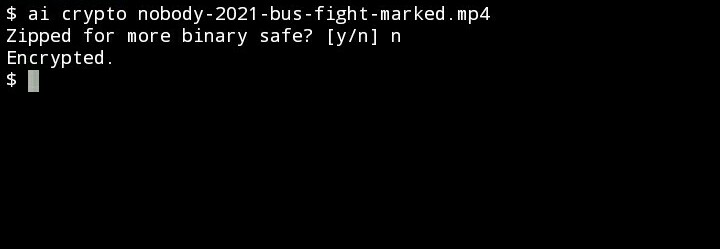
7. Cek file yang baru saja di enkrip.
$ ls
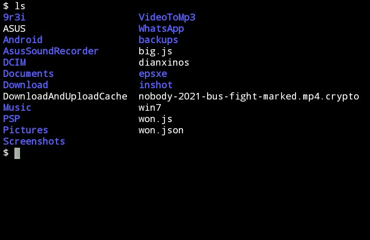
Akan terlihat file yang bernama
--> nobody-2021-bus-fight-marked.mp4
menjadi,
--> nobody-2021-bus-fight-marked.mp4.crypto
8. Untuk mengembalikan file tersebut cukup dengan pola:
$ ai crypto <nama_file>
Untuk mengenkripnya cukup dengan mengetik:
$ ai crypto nobody-2021-bus-fight-marked.mp4.crypto
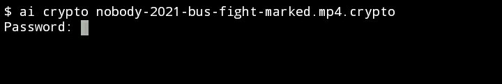
Lalu masukan kata sandi untuk kunci file ini
Tunggu hingga proses selesai
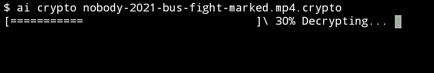
Jika sudah, cek file dengan mengetik
$ ls
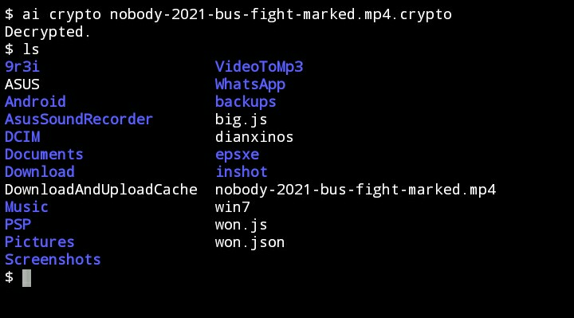
Play the decrypted file and check media meta-data,
D. Registration
...
E. Packages
...
F. Tools and Utilities
...
G. Testing
...
[IN-PROGRESS]
Writing...